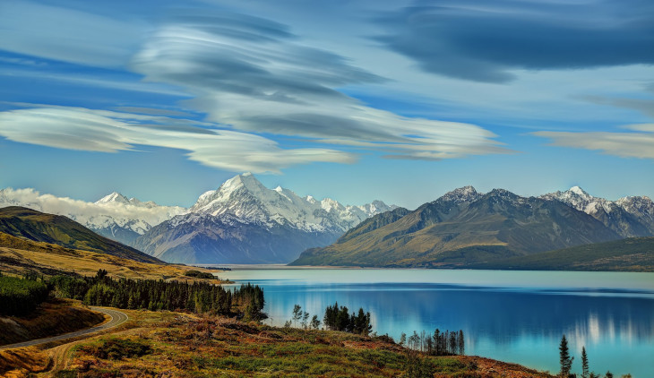
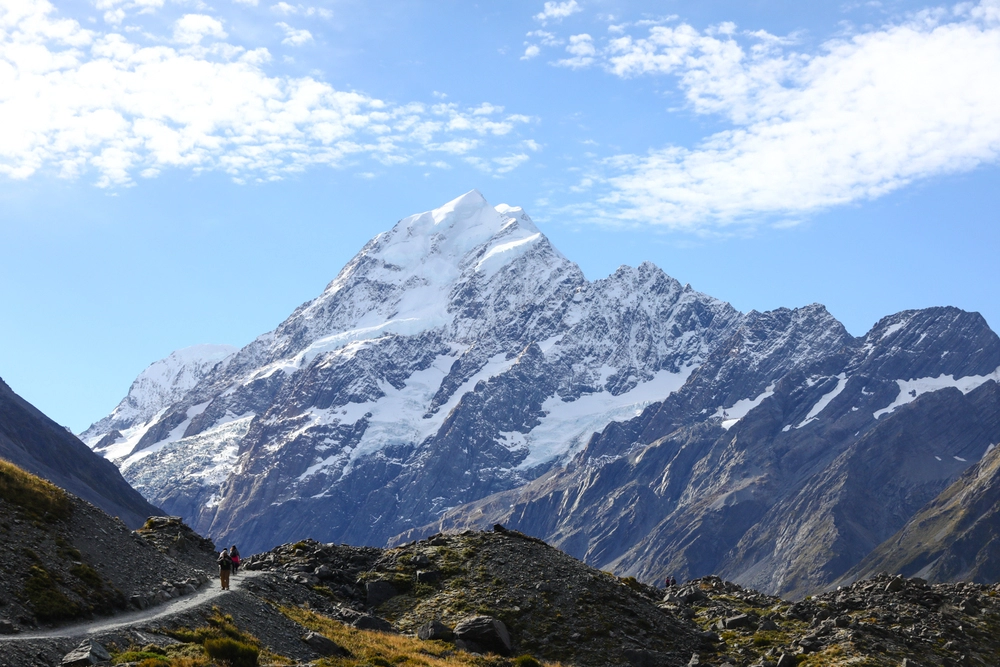

O País Mais Lindo do Mundo
A Nova Zelândia é famosa por suas paisagens deslumbrantes, cultura vibrante e rica biodiversidade. É um destino de sonho para viajantes e amantes da natureza.

Desde as montanhas majestosas dos Alpes do Sul até as praias de areia dourada, a Nova Zelândia oferece uma variedade incrível de cenários. Não perca a oportunidade de explorar a Ilha do Norte e a Ilha do Sul, cada uma com suas características únicas.

Sobre a Nova Zelândia
A Nova Zelândia é um país insular localizado no sudoeste do Oceano Pacífico, conhecido por sua cultura maori, uma rica herança indígena e paisagens naturais impressionantes. Com duas ilhas principais, a Ilha do Norte e a Ilha do Sul, cada uma oferece uma experiência única e cativante.
Cultura e Tradições
A cultura da Nova Zelândia é uma fusão vibrante das tradições maoris e da influência europeia. Os maoris, os habitantes indígenas, têm um profundo respeito pela natureza e uma rica tradição oral que inclui mitos, danças e músicas. A dança Haka, famosa em todo o mundo, é uma expressão cultural importante, muitas vezes realizada antes de competições esportivas.
Cidades Principais
As principais cidades da Nova Zelândia incluem:
- Auckland: A maior cidade do país, conhecida por suas belas vistas do porto e a icônica Sky Tower. Auckland é um centro multicultural, com uma animada cena gastronômica e artística.
- Wellington: A capital, famosa por sua arquitetura, museus e a vibrante cena de cafés. O Te Papa, o museu nacional, oferece uma visão abrangente da história e cultura do país.
- Christchurch: Conhecida como a "Cidade Jardins", Christchurch combina história com modernidade. Após o terremoto de 2011, a cidade passou por uma revitalização incrível, com novos espaços públicos e arte ao ar livre.
Natureza e Aventura
A Nova Zelândia é um paraíso para os amantes da natureza. Com montanhas majestosas, lagos cristalinos e praias deslumbrantes, o país oferece uma variedade incrível de cenários. Entre as atividades ao ar livre estão:
- Trilhas e Caminhadas: O Parque Nacional de Tongariro e o famoso circuito de trekking de Routeburn são apenas algumas opções para os aventureiros.
- Esportes Aquáticos: A costa da Nova Zelândia é perfeita para surfe, mergulho e passeios de caiaque. Bay of Islands e Abel Tasman são destinos populares.
- Esportes de Aventura: O país é conhecido como a "capital mundial do bungee jumping". Outros esportes radicais, como rafting e parapente, também são amplamente praticados.
Gastronomia
A culinária neozelandesa é uma deliciosa mistura de influências maoris e britânicas, com uma forte ênfase em ingredientes frescos e locais. Entre os pratos típicos estão o hangi (carne e vegetais cozidos em um buraco no chão) e a pavlova, uma sobremesa à base de merengue. Além disso, a Nova Zelândia é famosa por seus vinhos, especialmente os brancos, como Sauvignon Blanc.
Conclusão
Se você está buscando um lugar para relaxar ou uma aventura emocionante, a Nova Zelândia tem algo a oferecer para todos os gostos! Com sua natureza exuberante, rica cultura e atividades diversificadas, é um destino imperdível para qualquer viajante. Descubra a hospitalidade dos neozelandeses e deixe-se encantar pela beleza deste país único!